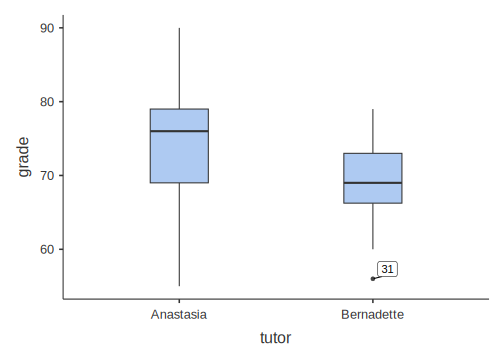
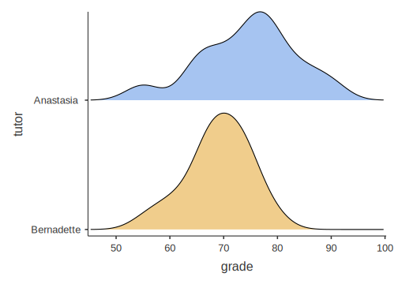

Chapter 4 Data visualizations
There are a few visualizations possible from among the jamovi Descriptives options. Again, your main textbook by Navarro & Foxcroft (2019) dedicates a chapter to data visualization in jamovi. This is Chapter 5 (Drawing graphs). And also again, the best way to get through this chapter is to open up jamovi and follow along at each step. There are no practice exercises for this chapter.
To illustrate these various visualizations, we will use the Chico2.omv sample data set from Navarro & Foxcroft (2019). To get to this, just go to \((\equiv)\) > Open > Data Library > Chico 2. The data consist of grades on some test (grade_test), which is a continuous variable, along with a time-of-test variable, time, which is a 2-level factor, where “1” means at time 1 and “2” means at time 2.
4.1 Histograms
The first visualization is the well-known histogram, where the frequency of particular responses are either “binned” if they are non-discrete (e.g., values with decimals), or possibly “stacked” if they are discrete integers (though such a variable may be binned as well).
What does this mean? For certain variables, like reaction times (RTs), values almost never repeat. It would be very strange for any one or two people to get the same exact reaction time of 632.44 milliseconds (ms). Therefore, you can’t really “stack” these observations in a histogram. What you can do, however, is bin them. You can create various bins of, say, 50 milliseconds, and place relevant values in there. For instance, there could be a bin for RTs between 350-400 ms, another one adjacent, to the right of that one for RTs between 400-450 ms, then for 450-500 ms, and so on. You can change the width of the bin.
For other variables, it’s entirely possible to stack them, sometimes. For instance, if age (in years) is recorded as a simple integer, it would be very easy to stack the 18s, the 19s, the 20s, the 21s, and so on, as long as your age range is relatively limited (e.g., typical college students). Note that if you had a really wide range of ages, you might bin them (1-5, 6-10, 11-15, 16-20,… 61-65… etc.).
Often paired with the histogram is the density plot, which uses math to estimate what a population distribution with many, many observations would look like based on the sample data you have. Ideally, we would like to see a perfect bell curve as the density plot, but that is rare.
Go get these for the Chico2.omv data, we moved grade_test over to the Variables box, and time over to the Split by box. Then we checked Histogram and Density under Histograms. You can see the parameters that need to be set in Figure 4.1 below.
Figure 4.1: Parameters for histograms and density plots for test grade split by time of test (with the data set ‘Chico 2’ from Navarro & Foxcroft, 2019).
The results of this are below.
DESCRIPTIVES
Descriptives
────────────────────────────────────────────
time grade_test
────────────────────────────────────────────
N 1 20
2 20
Mean 1 56.98000
2 58.38500
Standard deviation 1 6.616137
2 6.405612
──────────────────────────────────────────── 4.2 Boxplots
One of the drawbacks of histograms and density plots is that, although they are handy with respect to depicting the informal shape of a distribution, they are not so good at showing particular statistics about any given variable. This is where the boxplot comes in. Together with violin plots and dotplots (which can all be superimposed), you can offer your reader/listener a great deal of information about your variables.
We will use the Harpo data set provided by Navarro & Foxcroft (2019) (we see this data again in Chapter 11 of Navarro & Foxcroft (2019)). This data has to do with the grades of 33 fictional students in “Dr. Harpo’s” statistics class. Dr. Harpo also has two tutors: Anastasia and Bernadette. Go to \((\equiv)\) > Open > Data Library > Harpo.
Once you have addressed the note above, go to Exploration > Descriptives and simply slide the grade variable into the Variables box, and then (since you already know how to do this) slide the tutor variable into the Split by box. Finally, click the Box plot box under the Box Plots heading. Also check the following boxes, which will help you understand the boxplot: Quartiles, Median, Minimum, and Maximum. You can see these settings in Figure 4.2 below.
Figure 4.2: Parameter settings for boxplots along with related descriptive statistics.
Along with the statistics, Two side-by-side plots should appear in the output window. You can see all this below. But because of the length of the explanation (spanning several paragraphs), we are going to start explaining the boxplot above the descriptives and figure below, so that it is easier for you to scroll back and forth.
Looking at the boxplots below, you are probably asking yourself: “What do the different elements of the box mean?” You have probably also noticed that there isn’t just a box in the plot. Rather, the box is divided into two by a horizontal line, and the box has vertical lines extending from the top and the bottom. Finally, there’s a strange dot at the bottom of the boxplot for the tutor named “Bernadette.”
First, the box itself. The box simply encloses the data from the 1st to the 3rd quartiles. As explained in glossary below (Section 3.5.2.5), the first quartile is the same as the 25th percentile, or the grade that lies just above the bottom 25% of the grade scores (ordered from lowest to highest). It’s the bottom of the box. The 3rd quartile is identical to the 75th percentile, or the grade that lies just above the bottom 75% of grades. This is the top of the box. So if your grade was at the third quartile, then 75% of the class would have scores below yours. To verify this, you can compare the boxplot to the descriptives above them. The 25th percentile for Anastasia is 69. This corresponds to the bottom of “her” box. Likewise, the 75th percentile for her data is 79. This is the top of her box. You can double check this for Bernadette’s box.
All this also suggests that half of all the scores lie between the 1st and 3rd quartile. So, in effect, the box shows you where the middle half of your data is (which also entails that half of the data is outside the confines of the box). This box is also known as the Interquartile Range or IQR (see Navarro & Foxcroft (2019), Section 4.2.2, for more information).
So now, what does the horizontal line in the middle of the boxes mean? That line represents the median (also explained below in the glossary below, Section 3.5.1.2)). Working from the discussion directly above, the median is simply the 2nd quartile, or the 50th percentile. This can be verified by looking at the values for the median and the 50th percentile; they are identical values (for Anastasia and Bernadette, respectively).
DESCRIPTIVES
Descriptives
─────────────────────────────────────────────
tutor grade
─────────────────────────────────────────────
Median Anastasia 76
Bernadette 69.00000
Minimum Anastasia 55
Bernadette 56
Maximum Anastasia 90
Bernadette 79
25th percentile Anastasia 69.00000
Bernadette 66.25000
50th percentile Anastasia 76.00000
Bernadette 69.00000
75th percentile Anastasia 79.00000
Bernadette 73.00000
───────────────────────────────────────────── 
In other words, the median is the middle value of your data, if you ordered your data from smallest to largest. That is, irrespective of their own values, half of the data points should lie below the median, and half above (and if there is an even number of data points, the median is the average of the middle two values).
The next issue is the vertical lines extending from the top and bottom of the box, respectively. These are often called whiskers.47 Traditionally, these lines extend out to 1.5 times the interquartile range (the value at the 3rd quartile minus the value at the 1st quartile), a calculation we can attribute to Tukey (1977). The idea here is to capture all the data that is not considered potentially extreme within the ends of the whiskers.
Anything outside the whiskers, then, is considered possibly extreme, and could have an unexpectedly high influence on the calculation of the mean. This brings us to the final element of the boxplot: the dots (sometimes small circles). These appear beyond the whiskers and represent individual observations whose values are probably a bit extreme, given what we’d expect from a normal distribution.
Another name for such observations is outliers, or potential outliers, to be precise. Determining what is vs. isn’t an outlier is a little bit involved and goes well beyond boxplots. Your main textbook (Navarro & Foxcroft, 2019) covers this issue with respect to boxplots in Section 5.2.3., though the general concept is introduced in Section 4.2.1.
Note that in the boxplot figure there is one dot on the plot, which is located at the bottom of Bernadette’s group of students. This is a potential outlier. If you see any dots at all, then the topmost and/or bottomost of these will be equivalent to the Maximum and/or Minimum values in your data. For the person with the low grade who has Bernadette as a tutor, you can see that the minimum in her group is 56, which is exactly where the dot is at the bottom of Bernadette’s box. Boxplots provide no representations of data beyond these dots.
Overall, the boxplot is a quick way of visually determining critical characteristics of your data. Here are some guidelines:
- The bigger the box and the longer the whiskers, the more spread out your data is (and vice-versa)
- The closer the median is to the center of the box, the more symmetrical (non-skewed) your data is (and vice-versa)
- A higher number of dots in your boxplot indicate a higher number of extreme values in the tails of your distribution. However:
- This matters much more if there are considerably more dots above the top whisker than below the bottom whisker (or vice-versa)
- The larger the data set, the more dots in the extremes you can expect (what matters is their relative distribution above or below the whiskers), so dots appearing in the boxplot is much more of a concern for smaller data sets
- This matters much more if there are considerably more dots above the top whisker than below the bottom whisker (or vice-versa)
4.3 Violin plots
Violin plots are really an extension of the boxplot. You can think of it this way: A violin plot is to a boxplot what a density plot is to a histogram (see Section 4.1). In fact, you could just call the violin plot a sideways, self-reflected density plot (with the ends cut off), because that’s all it is, really. There are really only two main differences between a density plot and a violin plot:
- A violin plot is vertical, whereas a density plot is horizontal
- A violin plot is usually reflected against itself,48 whereas a density plot is not.49
To get a violin plot, simply click of the Violin check box under Box plots. Also click Box plot, as that will give you an idea of how the violin plot circumscribes the boxplot, which you already understand. Finally, also check Density under Histograms. We have seen these before, but it is a good idea to do so now to see how the density plots and violin plots relate.
DESCRIPTIVES
Nicely, the boxplots get embedded within the violin plots when you click both in jamovi. This is another reason why these kinds of plots can stuff a lot of information into a small space.
Anyway, the first thing to notice (if you hadn’t already with the boxplots before), the axes are switched between histograms/density plots, on the one hand, and boxplots/violin plots, on the other. In fact, it’s the histograms and density plots that are unusual in the world of statistical visualization. In almost all other cases, the outcome variable is plotted on the y-axis (as you see with the boxplots and violin plots), not the x-axis (as you see with the histograms and density plots). We encourage you to always think of your outcome variable as being plotted on the y-axis; this “mind trick” actually helps you understand other statistics better, especially linear regression (coming up in Chapter 7).
Note the “violin-like” quality of the plots.50 This comes from turning a density plot on its side and reflecting it against itself. Obviously, the density plot by itself is more detailed, whereas the violin plot is a more restricted visualization.
4.4 Dot plots
One final way of illustrating the nature of your data is to use a dot plot. This simply plots out each observation along the y-axis of the graph. There are two options here: You can stack the dots, or jitter them. Stacking works better for small data sets (like the Harpo data set), whereas jittering works better for large data sets where you are likely to have many dots with close or identical values. Generating this graph is just as easy as the others. Just check the Data box (under Box plots), and choose Stacked or Jittered from the drop-down menu below it. An example of this is shown in Figure 4.3 below.

Figure 4.3: Parameters for generating a stacked dot plot.
The results of the stacked dot plot can be seen below. We also checked Violin in order to illustrate the relationship between the two. Side-by-side dots represent identical values (i.e., students who got the same grade).
DESCRIPTIVES
Note that these all fall under Box plots for a reason. Namely, you can combine these plots in any way you see fit. We have combined all three into one plot below. Note that the dots are jittered this time, strictly for illustration purposes (i.e., it was not helpful in any way for visualization since the number of observations is low).
DESCRIPTIVES
4.5 Bar plots
The next visualization covered here is a bar plot.
The bar plot is a good way of visualizing frequency data.51 This type of visualization is not usually necessary for any kind of write-up summarizing your data set. However, it can be very useful, ultimately, for chi-square analyses and the display of individual Likert items. A discussion of chi-square analyses comes up later in this Guide (Chapter 5), and in your main textbook [Navarro & Foxcroft (2019); Chapter 10]. The display of Likert items does not really come up in this class.
Despite the fact that you will probably not need this kind of plot for this class, you can still practice. We will use the Harpo data again. We will compare the number of students in Anastasia’s vs. Bernadette’s tutoring groups. First, you need to drag the tutor variable over to the Variables box. Then check the Frequency tables check box located under the left-most (but label-less) white box. Finally, check the Bar plot box under Bar plots to get the frequency plot. You can see the parameter settings for this in Figure 4.4
Figure 4.4: Parameters for generating a bar plot.
The result is a simple bar plot of the number of students in each tutoring group, along with relevant descriptive statistics above the plot. See below.
DESCRIPTIVES
FREQUENCIES
Frequencies of tutor
──────────────────────────────────────────────────────
Levels Counts % of Total Cumulative %
──────────────────────────────────────────────────────
Anastasia 15 45.45455 45.45455
Bernadette 18 54.54545 100.00000
────────────────────────────────────────────────────── The meaning of the bar plot is almost self-explanatory in this case.
4.6 Q-Q plots
Finally, we get to the last type of visualization available under Descriptives: the Q-Q plot (which is short for quantile-quantile plot).
This plot is strictly diagnostic. It’s a quick way to detect whether your data is normally distributed or not. In general, it plots the quantiles of two distributions against each other. To assess normality (the default option in jamovi), it plots the quantiles of a theoretically normal distribution on the x-axis against the data that you have on the y-axis in the form of standardized residuals (another term for individual deviations from central tendency; z-scores, essentially).
That may have made little sense to you at this point, and that’s okay. What’s important about this plot is that the dots should line up near the line without any systematic or extreme deviations.52
We’ve provided the Q-Q plot for the Harpo data, with grade divided into the two tutor groups: Anastasia and Bernadette. The parameters you need to set to generate this is in Figure 4.5 below.
Figure 4.5: Parameters for generating Q-Q plots.
DESCRIPTIVES
As you can see, the dots line up quite closely to the line, suggesting that the data is normally distributed.
To show what a positively skewed data set looks like in a Q-Q plot, we have opened the AFL Margins data set from Navarro & Foxcroft (2019), a data set that has something to do with Australian Rules Football. You can see the results of this below.
DESCRIPTIVES
This time we included the histogram to show you the positive skew. In the Q-Q plot, look at the y-axis, and how the scale only goes down to about -1.5 standardized residuals (z-scores), whereas the x-axis goes down to -3. The dots splay out to the left away from the line, suggesting that they’re clumping up at the bottom end and not producing a nice, leftward, asymptotic (small) tail. At the upper end, you can see that several dots have higher values than the line would “suggest.” This means that the z-scores are too high for the distribution for it to be considered a normal. In other words, there is positive skew.
If you didn’t understand very much of that, that’s okay. The beauty of the Q-Q plot is that dots-on-or-near-the-line means that your data fit that particular theoretical distribution well (in this case, the default: a normally distribution). Dots-not-on-or-near-the-line means that you might need to do something to your data (a transformation) in order to do statistics, or choose a different kind of analysis altogether.
4.7 Outside help on visualization
4.7.1 Histograms
datalab.cc also has a tutorial on histograms and density plots. They are videos #19 and #20, respectively (these are also available for Texas A&M as tutorials in the set of LinkedIn Learning tutorials at Texas A&M). Your textbook (Navarro & Foxcroft, 2019) also covers histograms in the first section (5.1) of Chapter 5.
4.7.2 Boxplots
For some outside help on boxplots, you can go to video #21, datalab.cc’s tutorial on boxplots.
4.7.3 Violin plots
For more on violin plots, you can go datalab.cc’s tutorial on them, which is video #22.
Your main textbook also covers violin plots in Section 5.2.1.
4.7.4 Dot plots
For outside help on dot plots, you can go to datalab.cc’s tutorial on dot plots, which is video #23.
4.7.5 Bar plots (#OutsideHelpOnBarPlots)
For outside help on bar plots in jamovi, you can go to datalab.cc’s tutorial on bar charts, which is video #24.
References
Moreover, a more descriptive name for the boxplot is the box-and-whiskers plot. Boxplot is really just a shortened version of that.↩︎
Sometimes, the reflecting is dispensed with since it is, actually, redundant.↩︎
The reflecting is what ultimately gives the violin plot its shape, and hence, its name.↩︎
This is sort of a lie. Honestly, normally distributed data look more like deep-sea skates or rays, but the labels stingray plot or skate plot are going to take off any time soon; the misnomer has stuck. Nonetheless, when the data is really bimodal, you do get a violin-like quality to the plots.↩︎
Traditionally, pie charts have been used to do this, but pie charts can be problematic for several reasons. Here is a link that explains pretty clearly why.↩︎
A really nice feature of the QQ plot is that it isn’t restricted to comparing your data to normal distributions (though that’s all we do in this class). Rather, you can use it to determine whether your data conform to some other well-known distribution, which might lead to another family of statistics (this is way beyond the scope of this class, but you should know about it).↩︎